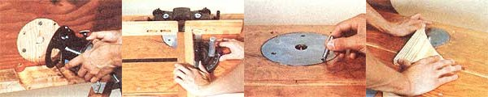
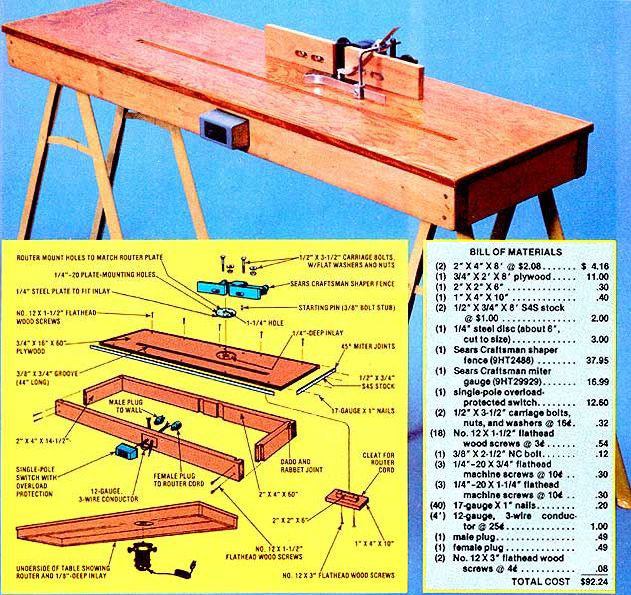

Every well-equipped wood shop needs a router to form the various joints, moldings, and inlays common to all quality cabinetmaking. These versatile groovers are most often used freehand, or with a guide which attaches directly to the tool itself . . . but there are some jobs-such as the lengthy straight-line cuts that are required when making window molding-which demand the steadiness of a solidly mounted power-head and the proper guiding mechanisms to control the delivery of the wood.
MOTHER's router table is designed to turn your hand-held power groovemaker into a versatile and precise molding tool . . . one that can handle most of the jobs normally done on a shaper, without giving up the router's freehand capabilities. (By removing a couple of screws, you can easily turn your tool back into the mobile molder you had before.) Better yet, you can assemble the table in a couple of short evenings . . . for a fraction of the cost of a high-speed shaper.
Begin the construction of your router bench by cutting the frame pieces from 2 X 4 lumber. You'll need two 14-1/2" sections and two more that are each 60" long. Fasten these four boards together with a combination of rabbet (in the 14-1/2" pieces) and dado (in the 60" lengths) joints.
For those folks unfamiliar with the technique, the rabbeting needed here involves nothing more than trimming away a 3/4"-deep by 3/4"-long piece from the 3-5/8" widths of each of the 14-1/2" boards . . . leaving 3/4" X 3/4" X 3-5/8" tongues, as in the drawing, at each end. Then, to make the dado portion of these unions, simply move 3/4 inch in from each end of the two 60" sections and cut a 3/4" X 3/4" groove across the 3-5/8" surface. The tongues on the short pieces of lumber will slide right into the slots in the long boards.
Next-to secure the joints-drill two 7/64" lead holes . . . through the back of the dadoes in the long planks and into the rabbeted portions of the short ones. Countersink holes for No. 12 X 1-1/2" flathead wood screws, and insert two of the fasteners into each of the four unions.
With that done, form the table's top by cutting out a 16" X 60" piece of 3/4" plywood . . . which will ride atop the frame. You can use the same lead-hole bit that was required to secure the joints to drill five lead bores on each long side of the working surface. Then countersink every one of the holes 1/4" deep . . . so that ten more No. 12 X 1-1/2" flathead wood screws can be sunk below the surface level, and the gaps filled in with either putty or wooden plugs.
Now you can complete your router's working surface by facing the plywood's edges with appropriate lengths of 1/2" X 3/4" S4S stock . . . mitered 45° so the pieces will fit snugly together at the corners. Apply quick-setting white glue and 17-gauge X 1" nails-at about 4" intervals-to bind the protective edge molding to the tabletop.
The router itself will be attached underneath the table, and fastened-with machine screws that pass through the plywood-to a 1/4" steel plate that's set into an indentation in the upper surface of the wood. You can determine the position for this inlay-as well as the corresponding recess on the bottom of the table by driving a 3" finishing nail through the wood (so that an equal amount of the spike protrudes above and below the board) at a point 24 inches from one short end and 5-3/4 inches from one long side of the working surface.
Then fit your router with a 1/4" straight face bit (adjusted for 1/4" depth), and carve a circle on the top surface-all around the nail-by butting the router's bottom plate against the spike. When that's done, readjust the router for a 1/8"-deep cut, flip the plywood over, and repeat the inlay shaping process on the underside of the board. Finish both inlays by removing the nail, reequipping your router with a wider straight face cutter (which still must be set for the appropriate depth), and routing out the interior of both circles.
The 1/4" metal plate-to which the router will be fastened-must be cut so it will fit into the 1/4"-deep inlay atop the table. Unless you're very handy with a hacksaw-or patient with a file-it would be best to have this disc shaped for you by a machine shop . . . and, while they're at it, you can also have the machinists bore a 1-1/4" hole exactly in the center of the circle. Once the metal forming is done, use the finished product as a template to rout out a 1-1/4" hole through the plywood . . . to accommodate the chuck.
Now remove the bottom plate from your router and use its mounting holes as guides to position matching bores in the 1/4" steel plate. Mark each location with a center punch, and drill it to the same diameter as the screws which hold the bottom router plate in place. Then countersink each one of these holes . . . just enough to allow a 1/4" flathead screw to fit flush to the surface. Finish the router mount preparation by continuing the holes through the plywood.
Next use the router's bottom plate again-this time as a steel-plate-to-table mounting screw template-by first lining up the holes and then giving the groover bottom 1/6 of a turn on the 1/4" disc. Center-punch the new set of points, drill them with a No. 7 bit, and thread the metal with a 1/4"-20 tap. You can now set the 1/4" plate back in the inlay, mark the positions of the new holes on the wood, remove the steel, and drill 1/4" bores through the plywood. Once you've countersunk the underside of the table to accommodate 1/4" X 3/4" flathead machine screws, you can cinch the plate to the wood. (Since you'll need your router to finish the job, don't attach it to the table just yet.)
Many routing jobs-especially those involving small pieces of wood that must be hand formed-will be much easier if you lock the router in place and work the wood against it, rather than vice versa. A guide that allows you to brace and pivot the wood can be an enormous aid in such crafting. You can form your starting pin by cutting down a 3/8" X 2-1/2" coarse-threaded bolt. Trim the threaded portion of the fastener until only 3/8" of the grooved metal remains, and then lop off the shank and head of the bolt so that the fastener's overall length is 1-3/4".
Position the starting pin by center- punching a point-in the 1/4" steel disc which appears to be at about 4:30 (or 135°) . . . when you stand on the side of the table you'll work from. Drill this mark to 5/16", thread the hole with a 3/8"-16 tap, and spin the stud into the aperture.
With the router mount installed and the shaping stud in place, it's time to fasten the guiding mechanisms to your router bench. You can buy both the miter gauge and the shaper fence from Sears, Roebuck and Company, and you'll find these accessories nearly indispensable for accurate molding.
To position the groove in which the gauge rides, draw a line parallel to (and 5-1/2 inches from) the long edge of the table that's opposite the inlay. Begin the mark five inches from one end of the top, and finish it 12 inches from the opposite edge. Then, with a temporary fence to guide you (which you can cobble up from angle iron or a 2 X 4 and a couple of C-clamps), rout a hole 3/4" wide and 3/8" deep all along the line.
The shaper fence will face you and be mounted-with its wooden surface set about 1/8" behind the center of the router hole-perfectly square to the table edge. Place the fence on the table end mark the points-in its mounting slots-that will be closest to you (allowing for the diameter of the 1/2" mounting bolts). Use a 1/2" bit to bore the holes in the tabletop, and attach the fence with carriage bolts, nuts, and washers. (If the 2 X 4 frame piece interferes, chisel away some of the wood as shown in the illustration.)
To avoid having to reach under the table to turn your power tool on and off, just mount a switch on the side where you'll be standing. The safest method is to use a single-pole switch with an overload cutoff, because such a device will cut power if the router bit jams a piece of wood against the fence. (A less expensive approach would be to use a standard receptacle box and switch.)
Set the switch into the 2 X 4 frame by chiseling a 1/4"-deep indentation the size and shape of the toggle's base. Then drill two holes, each large enough to accommodate the wires which will run to the switch. Two of the wires from the male plug can go directly to the female receptacle for the router's plug. The other wire will be "hot" . . . and should be connected into one side of the switch and out the other.
When you mount your router to the table-by drawing it up to the underside of the plywood with screws which fit the router's bottom plate holes-you'll have a section of router cord left dangling in the air. You can assemble a cleat-to wrap the excess wire around-by screwing a piece of 1" X 4" X 10" wood over another chunk of 2" X 2" X 6" stock . . . and then fastening the assembly to the base of the tabletop as illustrated.
Coat your completed table with a couple of layers of polyurethane varnish . . . and be careful not to gum up the miter groove. To gain the full protective benefit from this covering, you'll probably want to apply a second layer. After about 48 hours of drying time, your new tool will be ready to be set on a pair of sawhorses and put to work. You'll be amazed how easy it is to make those formerly impossible straight-line cuts, and the shaping jobs you never dared to attempt before will suddenly be as uncomplicated as flipping a switch!
|
 LEFT TO RIGHT: Mounting the router . . . using a miter gauge to form square joints . . . installing the shaping pin . . . and shaping. |
 |
|